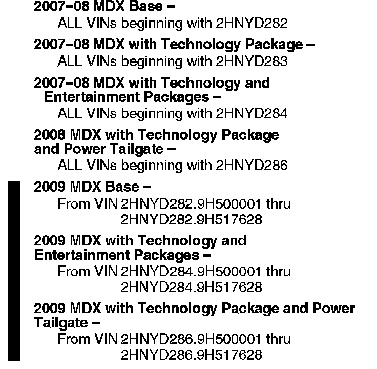

Suspension - Rear End Thudding/Drumming Noises
08-038October 7, 2009
Applies To:
See VEHICLES AFFECTED
Thudding or Drumming Noise From the Rear Suspension When Driving Over Rough Roads
(Supersedes 08-038, dated May 12, 2009, to revise the information marked by the black bars and asterisks)
*REVISION SUMMARY
Under VEHICLES AFFECTED, the VIN ranges for 2009 models have changed.*
SYMPTOM
A thudding or drumming noise comes from the rear suspension when driving over rough roads in vehicles that do not have the active damper system.
PROBABLE CAUSE
The rear dampers are faulty.

VEHICLES AFFECTED
CORRECTIVE ACTION
Replace both rear dampers, the damper mounting bolts, and the stabilizer link flange nuts.
PARTS INFORMATION
Rear Damper Assembly:
P/N 52610-STX-A03 (two required)
Damper Flange Bolt:
P/N 90171-STX-A01 (two required)
Damper Flange Bolt:
P/N 90172-STX-A00 (two required)
Stabilizer Link Flange Nut, 10 mm:
P/N 90002-S10-000 (two required)
WARRANTY CLAIM INFORMATION
In warranty:
The normal warranty applies.
Operation Number: 417101
Flat Rate Time: 0.8 hour
Failed Part: P/N 52610-STX-A02
Defect Code: 07409
Symptom Code: 04217
Template ID: 08-038B
Skill Level: Repair Technician
Out of warranty:
Any repair performed after warranty expiration may be eligible for goodwill consideration by the District Parts and Service Manager or your Zone Office. You must request consideration, and get a decision, before starting work.
DIAGNOSIS
Drive the vehicle over a rough road at about 20 mph. Select a road that has potholes or a similar condition, because the noise is created by sharp-edged bumps. If the rear suspension makes a thudding or drumming noise when going over bumps, go to REPAIR PROCEDURE.
REPAIR PROCEDURE
Replace the rear dampers, the mounting bolts, and the stabilizer link flange nuts:
^ Refer to page 18-42 of the '07-09 MDX Service Manual, or
^ Online, enter keywords DAMPER REPLACE, then select Rear Damper Replacement from the list.

Disclaimer